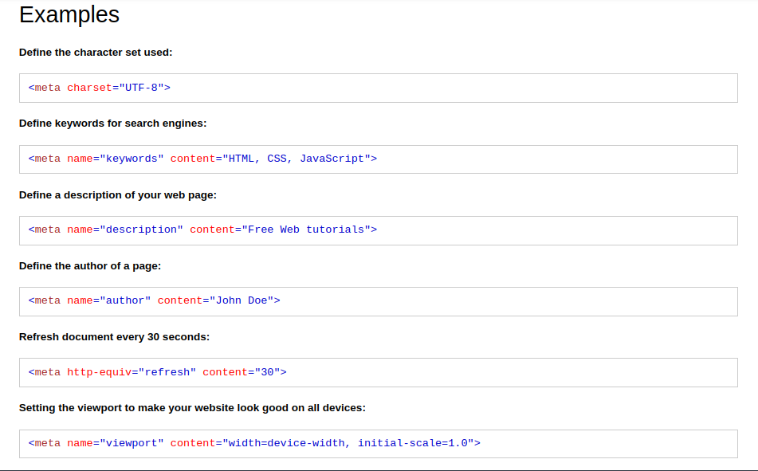
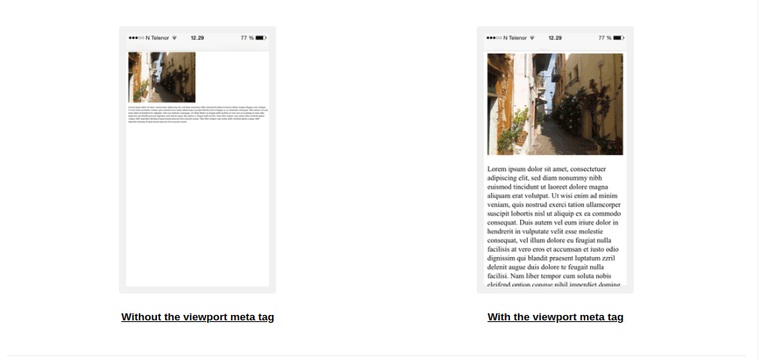

Source
Head tag
Merupakan container untuk metadata yang didalamnya ada tag, style, meta, link, script, dan base. Di tempatkan diantara tag html dan body.
Metadata
- Metadata tidak ditampilkan dihalaman
- Metadata adalah data tentang html document
- Metadata menentukan document title, character set, styles, scripts, dan meta information lainnya.
Title element
- Menentukan judul dari dokumen dan sangat dibutuhkan
- Isi dari tag title sangat penting karena nantinya akan mempengaruhi untuk search engine optimization(SEO)
- The page title is used by search engine algorithms to decide the order when listing pages in search results.
Style element
- Style element digunakan untuk menentukan style sebuah halaman HTML tanpa membuat file css terpisah
Link element
- Menentukan hubungan antara halaman yang sekarang(yang aktif) dengan external resource
- Biasa digunakan untuk menghubungkan ke file external style sheets
Meta element
- Meta element biasanya digunakan untuk menentukan character set, page descriptionkeywords, author of the document, and viewport settings.
- Metadata tidak akan ditampilkan dihalaman web kita, tapi digunakan oleh browser, search engine dan web services lainnya.
Penjelasan:

Setting viewport
viewport adalah area halaman website yang terlihat oleh user dan bervariasi tergantung device yang digunakan oleh user.
- Memberikan browser intruksi untuk mengatur dimensi halaman web kita. dan scaling?
- width=device-width : berguna untuk mengatur lebar sesuai perangkat yang digunakan oleh user
- initial-scale=1.0 : bagian ini berguna untuk men-set initial zoom level saat halaman pertama kali di load oleh browser
- Kayak pov mungkin yaa?
Perbedaan halaman yang menggunakan dan tidak menggunakan viewport saat dibuka di hp

Base element
- Menentukan base URL dan/atau men-target relative URL
- Harus mempunyai attribute href atau target, bisa juga keduanya
- Hanya bisa ada 1 base element di satu halaman html
Chapter summary
head element adalah container untuk metadata
head element ditulis diantara html tag dan body tag
title element membutuhkan dan menentukan title dari sebuah halaman website
style element digunakan untuk menentukan style untuk halaman website
link tag biasa digunakan untuk menghubungkan style sheets
meta element biasanya digunakan untuk menentukan character set, page description, keywords, author of the document, dan viewport settings
script element digunakan untuk menentukan client-side JavaScripts
base element menentukan base URL and/or target untuk semua relative URLs dalam sebuah halaman website